of recorded traffic deaths involve youth under 19 in the compiled analysis.
The crisis
A child's daily school ride should not carry a lifetime of risk.
Cambodia's family transport system is built around motorcycles. Children ride to school, markets, clinics, and family work without the protection their bodies need. The result is a preventable crisis of brain injury, medical debt, school dropout, and lost human potential.
<1%
Child passenger helmet use appears in some baseline and rural observations.
85%-98%
of the active vehicle fleet is motorcycles in the research plan.
11%
of injured children reach care within 30 minutes, according to the plan.
Why this matters
This is not a niche safety issue. It is a child development issue.
The research materials describe road traffic injuries as a leading cause of death and permanent disability for Cambodian children and adolescents. A crash can damage the child's brain, destabilize the household, and change the future of siblings who never touched the motorcycle.
estimated annual economic cost from serious road injuries and fatalities.
of students at sampled municipal primary schools commute by motorcycle.
fine level that can pressure adults, while child passenger enforcement remains inconsistent.
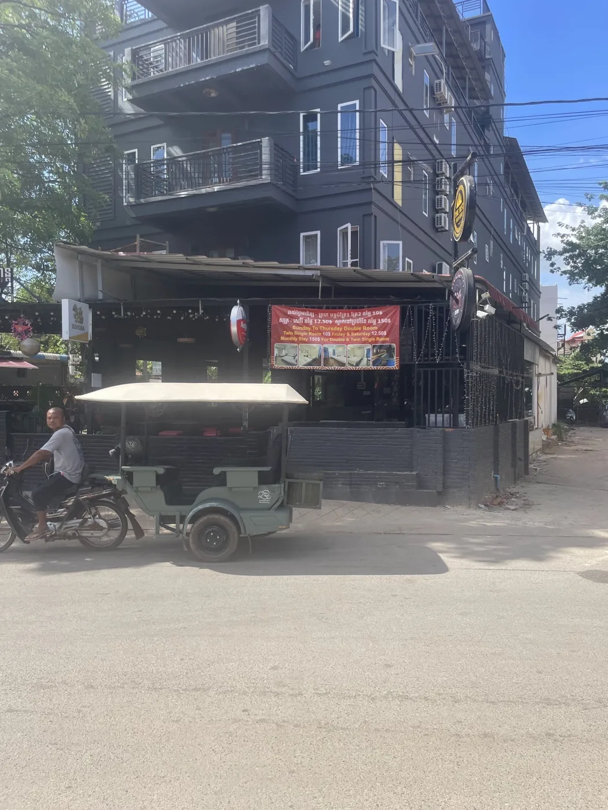
The family vehicle
The motorcycle is how families move through daily life.
A helmet campaign cannot assume families have safer transport options. Jim's Helmets starts from the reality on the road: multi-passenger motorcycle trips, short school routes, heat, limited disposable income, and children who depend on adults for protection.
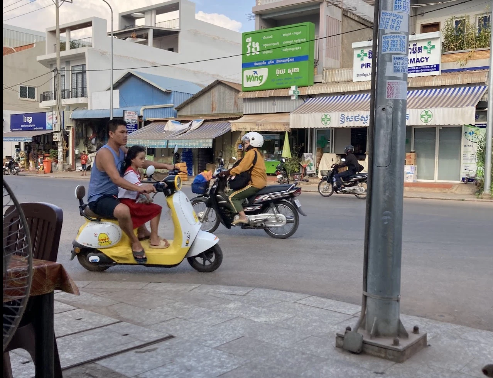
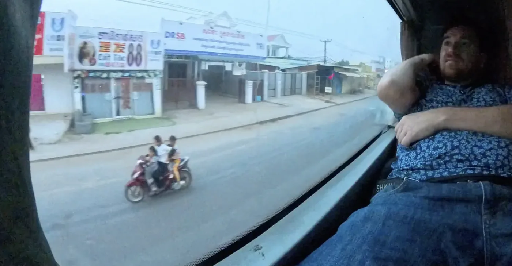
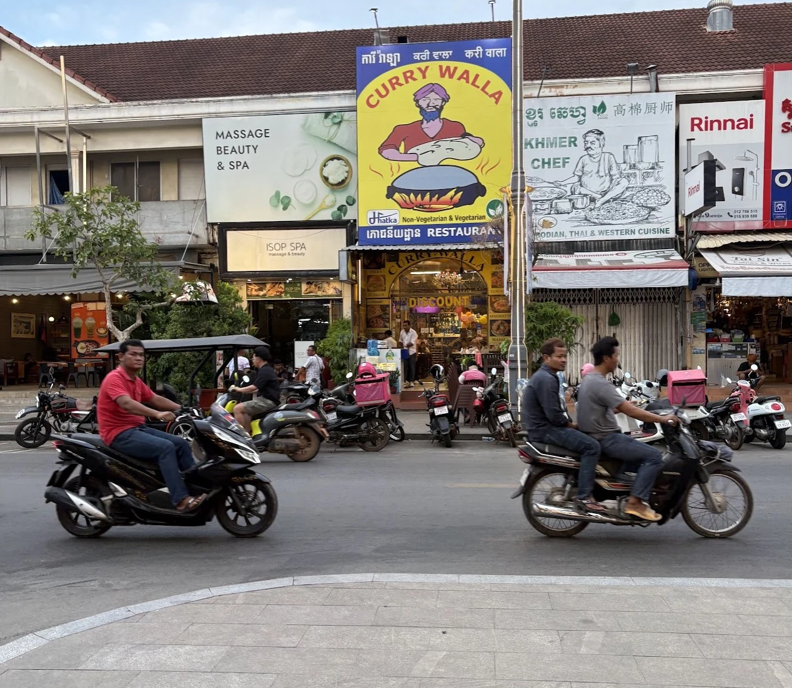
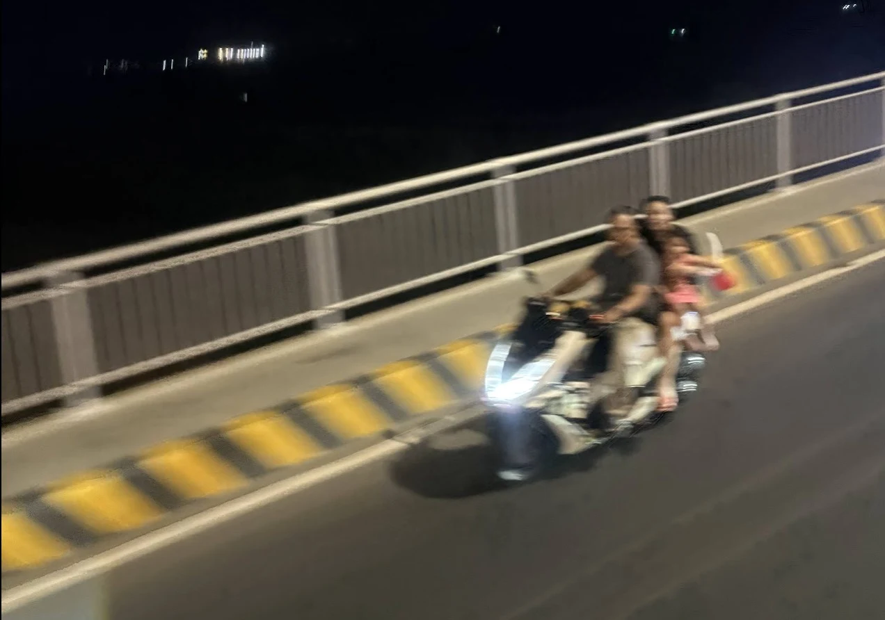
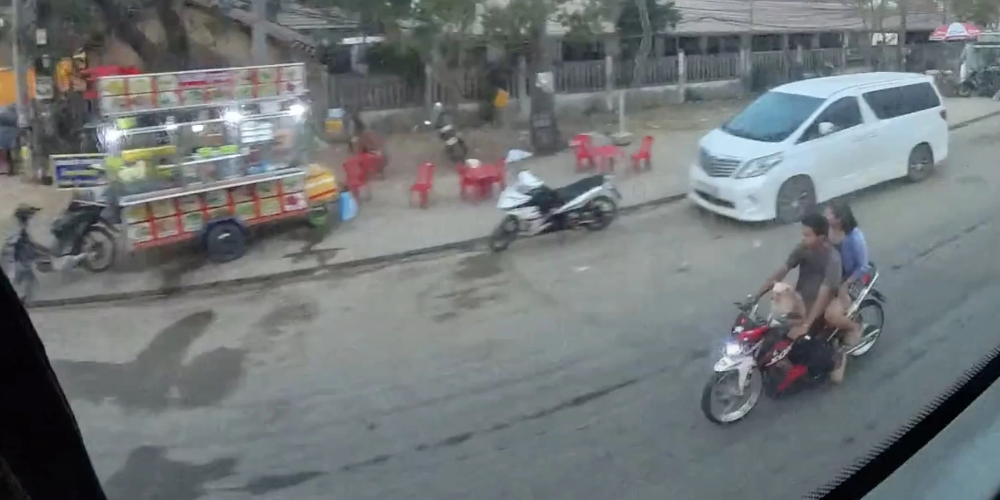
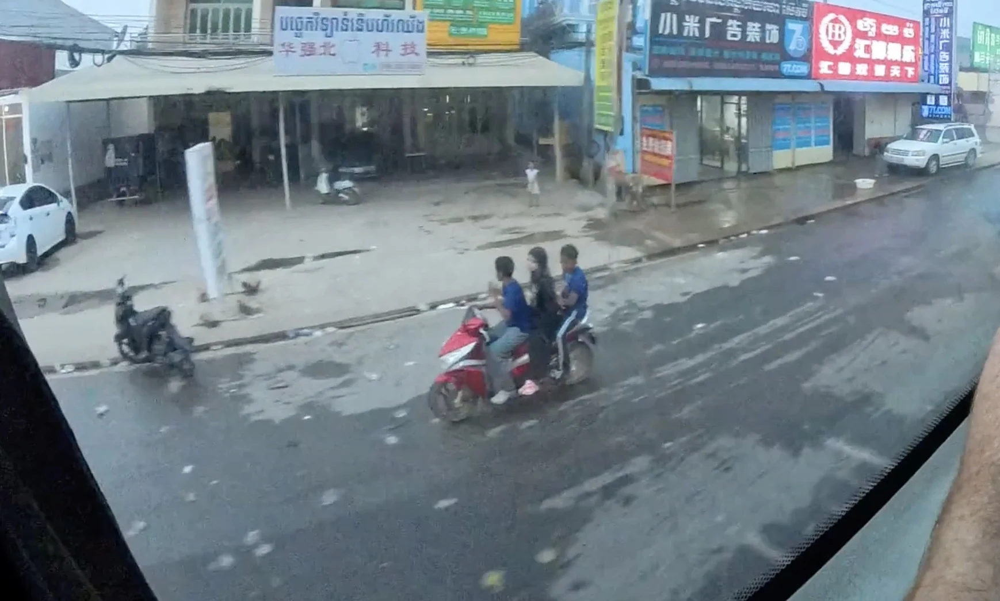
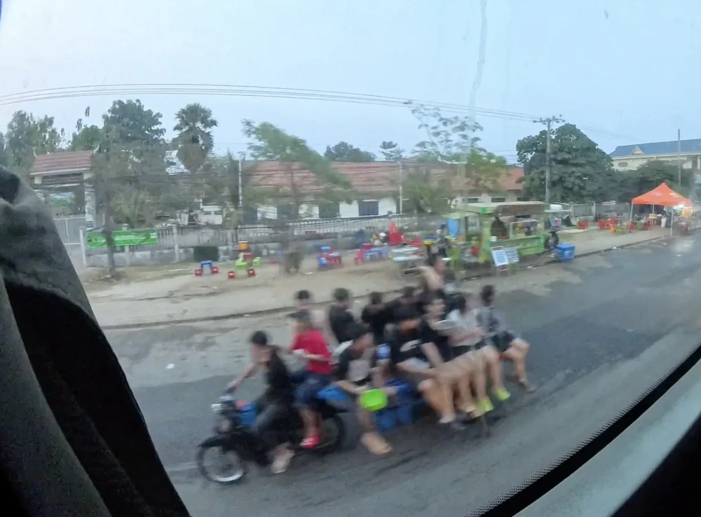
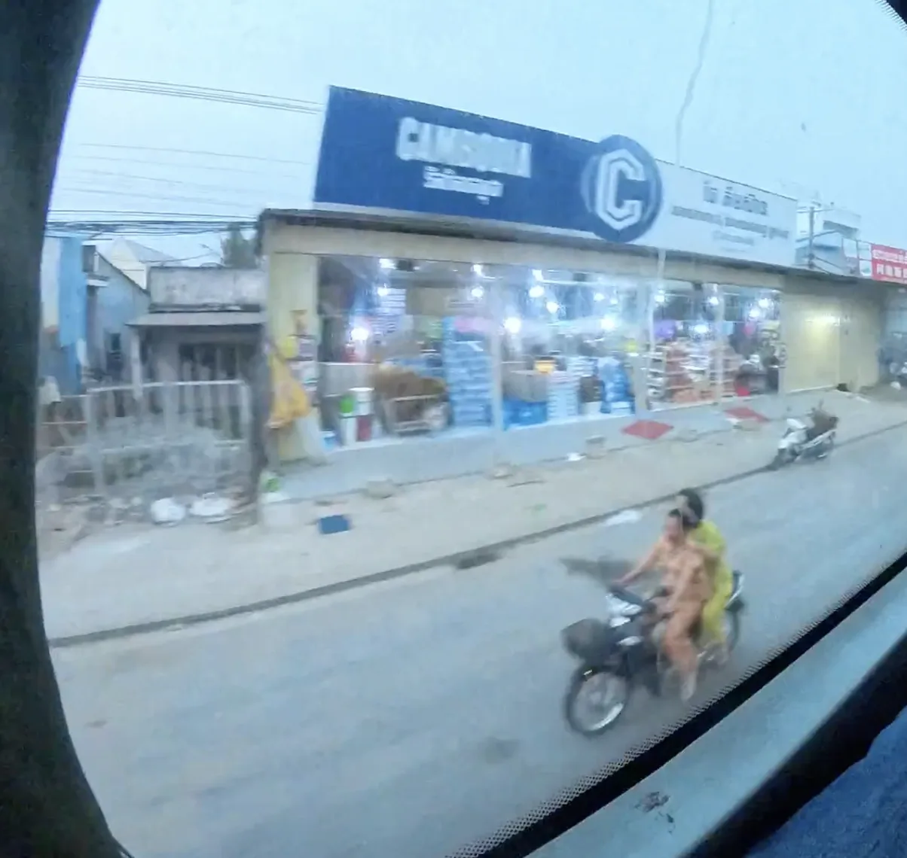
Child vulnerability
A low-speed impact can be catastrophic for a child.
Children are not small adults. Their skulls are thinner, their heads are proportionally larger, and traumatic brain injury can interrupt the developmental path of the brain itself.
Thinner skulls
A force that might concuss an adult can produce severe bleeding or permanent damage in a child.
Head-first ejection
A child's head-to-body ratio raises the chance that a motorcycle fall becomes a direct head impact.
Developmental injury
Pediatric brain trauma can affect learning, memory, movement, behavior, and lifetime independence.
The short-trip trap
The most dangerous ride is often the one that feels too ordinary to prepare for.
Parents often skip helmets for school drop-offs, market trips, or roads close to home because the route feels familiar. The research calls this the short-trip fallacy: risk is dismissed exactly where the child rides most often.
Familiar roads feel safe
Daily routes create confidence, but familiarity does not control traffic, road surfaces, speed, or other drivers.
Emergency care is delayed
If only a small share of injured children reach care within 30 minutes, prevention has to happen before the crash.
The helmet is first response
When medical help is late, certified impact protection is the intervention present at the first milliseconds of impact.
Not a blame problem
Parents need barriers removed, not lectures.
The documentation repeatedly points to practical and cultural barriers: heat, cost, poor fit, misinformation, child growth, weak enforcement, and cheap plastic caps that look like safety without offering certified impact protection.
H
Heat
Heavy, poorly ventilated helmets are easy to reject in Cambodia's climate.
$
Cost
Certified helmets can be unaffordable for families earning around $150-$250 per month.
?
Myths
Parents may fear neck strain, skull pressure, or overheating unless education answers those concerns directly.
✓
Habit
A helmet only works when worn every ride, which is why the school gate matters.
Debt and dropout
One unhelmeted crash can become a household financial emergency.
The debt-dropout research describes the chain reaction after pediatric head trauma: emergency care, out-of-pocket bills, informal loans, land or asset risk, and siblings pulled from school to cut costs or work.
estimated acute neuro-trauma cost range in the research materials.
annual interest burden families may face from informal distress financing.
dropout increase cited among families after severe household road injury.
A helmet is not just a piece of gear. It is a financial shield that can help keep land, schooling, and family income from being sacrificed after a preventable head injury.
A familiar public health story
Child helmets can follow the seatbelt path: engineering, trust, habit, then policy.
The seatbelt research compares today's helmet hesitation with earlier resistance to seatbelts: people feared discomfort, loss of control, and unlikely scenarios. Normalization came when better engineering met education, social expectation, and enforcement.
Old safety myths
Seatbelts were once seen as uncomfortable or dangerous. Child helmets face similar fear: neck damage, overheating, and "only a short trip" thinking.
The same solution arc
Better equipment, repeated education, public social proof, and consistent norms can turn optional protection into expected behavior.
What protection looks like
One child in a helmet. Everyone else unprotected.
This is what Jim's Helmets is built to change — not as an exception, but as the norm at every school gate.
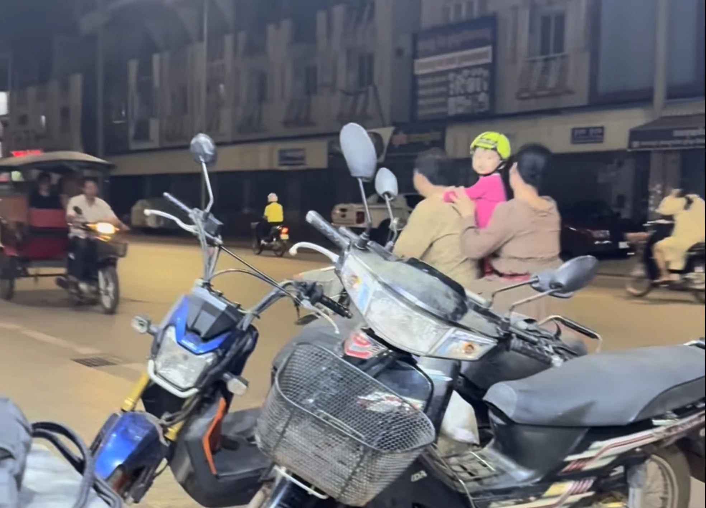
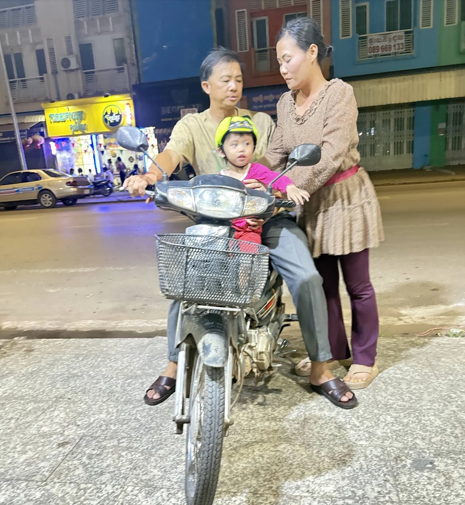
The investable answer
Jim's Helmets attacks the crisis at the school gate.
The model pairs certified tropical helmets with parent workshops, teacher reinforcement, public handover ceremonies, follow-up observation, and trade-ins as children grow.
What a donor funds
$25
helmet plus education tier
12
week school habit cycle
1,000
first pilot helmet target
47:1
research ROI target for final validation